With Battle Map, you can easily create high quality maps that your players will love. Suspense stays high as Battle Map reveals the map bit by bit as the players explore! Display your maps on a TV, projector, or external monitor, and play online with friends.
Read on to learn how to take your adventures to the next level!
Table of Contents
Basic Navigation
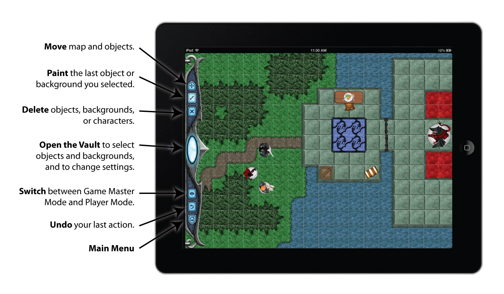Three Ways to Use Battle Map
Share
Place your device in the center of your table as you play!
Display
Connect your device to an external monitor, TV, or projector, using a cable or Airplay!
Online
Play online with friends - each using your own device!
Battle Map Modes
Game Master Mode
In this mode, you can draw your map, add objects, and view the entire map regardless of visibility settings.
Player Mode
In this mode, you can move your characters around and view just the portions of the map your characters see or have explored.
Here's the recommended way to use Battle Map in an adventure:
- Create the map using Game Master mode.
- Allow the players to take their turns using Player Mode.
- Hide Battle Map from the players, and switch to Game Master mode to take the monster's turn.
- Repeat steps 2-3 until your adventure is complete!
Note: Only the Player Mode view displays on an external monitor or projector or in online mode (for all but the GM), so your players don't accidentally see unrevealed terrain!
Introducing Battle Map 2
This is the second edition of Battle Map - a complete rewrite of the original version released in 2010. This new version has tons of improvements and updates, including a completely new user interface, online play capabilities, improved performance, iCloud support, and much more!
Battle Map 1
Battle Map 2
Here is the complete list of updates and improvements in Battle Map 2:
- Completely new interface. We have completely remade the interface for Battle Map 2, focusing on a more elegant user interface and an epic RPG look and feel.
- Online play. That's right - you can now play on your Battle Map with multiple devices! One device acts as the GM and the other devices are players and can move their tokens. This is great when you host a game and many players have iOS devices!
- Improved performance. We rewrote the engine from the ground up for improved performance, especially on larger maps.
- High quality PDF export. Many of you suggested that we add a way to export maps in high quality PDF so you could print them out for your game tables or use them in play by email games. Your wish is our command! :]
- iCloud support. Now you can synchronize your maps easily across multiple devices!
- Retina and iPhone 5 support. Battle Map 2 now works on the iPhone/iPod and iPad retina, and has full support for the iPhone 5 4" screen!
- Premium token store. By popular request, we have set up an optional store where you can purchase premium tokens made by professional RPG artists to further expand your token collection!
- Much, much more! We have also made tons of tweaks and improvements along the way. We hope you enjoy!
If you are upgrading from a copy of Battle Map 1, Battle Map 2 will automatically convert your maps to the new format and import your custom objects and background images. Note that there will be some minor changes as the behavior of some of our background tiles has changed in Battle Map 2.
Huge thanks to our Battle Map 1 customers for your patience, feedback, and support - you are what has made this huge free update possible! We hope you enjoy Battle Map 2, and that it helps you take your adventures to the next level!
Drawing Your Map
Loading and Saving Maps
The Main Menu allows you to create and delete maps, and access help, online games, and the Battle Map store. The Main Menu appears when you first start Battle Map, and you can return to the Main Menu by selecting the Main Menu button on the toolbar.
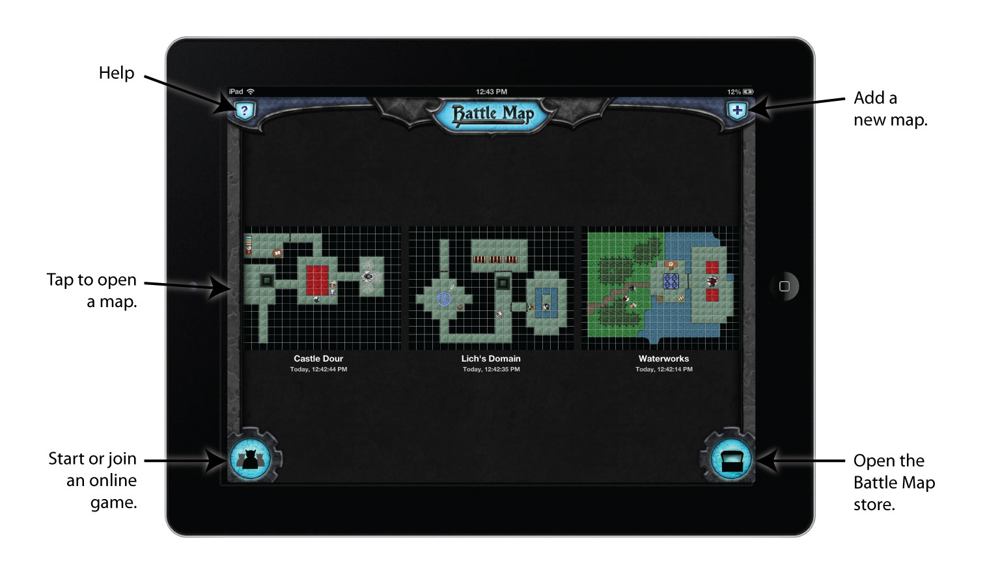Tap and hold a map's title to rename the map, copy the map, or delete the map.
iCloud Support
Battle Map 2 introduces the option to save your maps on iCloud so you can easily synchronize your maps across devices. If you wish to turn iCloud saving on or off, go to the Settings App on your device and find the Battle Map icon - a switch to toggle iCloud is inside. If you have any troubles with iCloud, try the following:
- Try restarting Battle Map.
- Try fully powering down the device (hold down the home button and power button until the screen turns black) and restarting.
- Check if your documents are saved in iCloud by going to the Settings App and choosing iCloud\Manage Storage\Battle Map.
- Make sure you are using the same iTunes account across your devices.
- Make sure you have a good Internet connection.
Note that you should not edit the same map at the same time across two devices, or else a conflict will occur. In the event a conflict occurs, when you tap a map Battle Map will display a dialog allowing you to choose the version you want to continue working with.
Drawing the Background
To draw the background, open the Vault, select the "Bg" tab, and choose the background you wish to draw with.
Then simply drag your finger along the screen, and Battle Map will automatically complete the edges of your tiles to make your map look amazing!
Note: Backgrounds are layered in the order they appear in the list, to help make maps look elegant and natural.
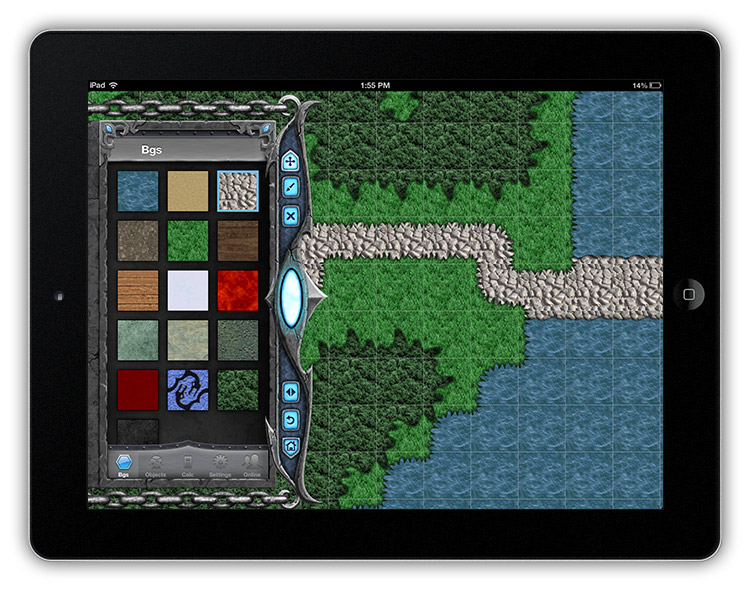Adding Objects
You can add a variety of objects to your map, such as characters, monsters, or other items such as treasure chests, tables, statues, and much more!
To add an object, tap the "objects" tab in the Vault, and choose the object you wish to add.
Then tap on the screen to choose where to add your object. By default, Battle Map will automatically switch to movement mode with the new object selected, so that you can resize, reposition, and rotate your object until you get it in the spot you like.
If you would prefer to draw several objects at a time, you can turn on the "Drag to Paint Objects" option in the Settings tab.
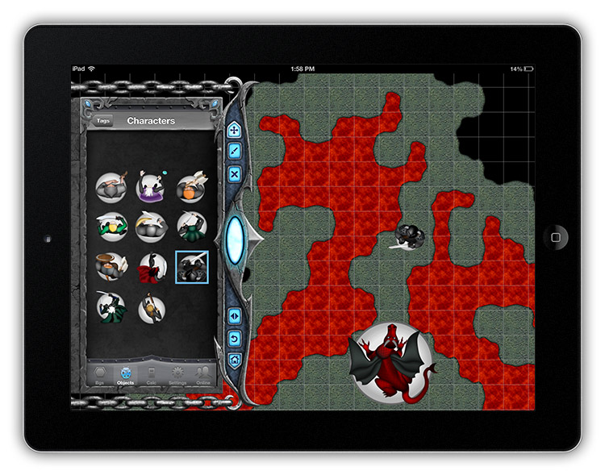Moving Objects
To move an object, simply drag the object to a new location. You can also tap an object to select it, and then pinch to scale or rotate.
By default, scaling objects is disabled to make it easier to rotate objects, but you can easily enable scaling of objects by turning on the "Object Scaling" option in the Settings tab.
If you have a lot of objects on your map, you may want to disable the "Drag to Move Object" in the Settings tab to avoid moving objects by mistake when you mean to pan the map. If this is disabled, you'll have to tap an object to select it before you can move it by dragging.
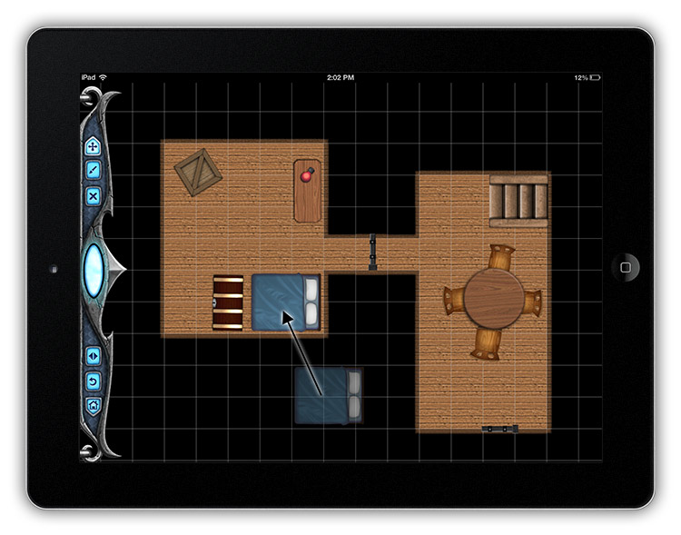Object Properties
To set properties on an object, double tap the object to bring up the Object Properties popover. Here you can set the following properties:
- Name: Text that will appear underneath the object. Useful to name characters or monsters, or note certain effects.
- Font Size: Allows you to increase or decrease the font size for the name.
- Max HP/HP: The maximum/current HP of the object, used to display a HP bar above the object (current health is shown as green).
- Is Character: Toggles whether this object is considered a character. This way, you can use any object as a character - perhaps a monster, or self-aware treasure chest for example! If an object is a character, the tiles that it can see will be visible in Player mode. Note if you set an object as a character, you may wish to give it a light source also if you are using a dark map.
- Position: Moves the object to the front (above all other objects), or to the back (below all other objects). Useful to make one object appear on top or underneath another. By default, objects are displayed in the order they are placed into the map (oldest at the bottom).
- Tint Color: Colors the object the specified color. Useful to distinguish between similar objects or note certain effects.
- Mark Colors: Choose a series of colors to animate underneath the selected object in a sequence. Useful to distinguish between similar objects or note certain effects. Note that this is not supported with an external display connected.
- GM/PC Mode Lock: If an object is locked, the object cannot be moved or scaled in the designated mode. However, you can still double tap the object to bring up its Object Properties. It may be helpful to lock objects that are part of the background to avoid accidental selection.
- Dark Vision: See the Battle Map Visibility section.
- Range of Light Source: See the Battle Map Visibility section.
- Hidden Object: See the Hidden Objects section.
- Has Been Revealed: See the Hidden Objects section.
- Blocks LOS: See the Battle Map Visibility section.
- Auto Reveal: See the Hidden Objects section. 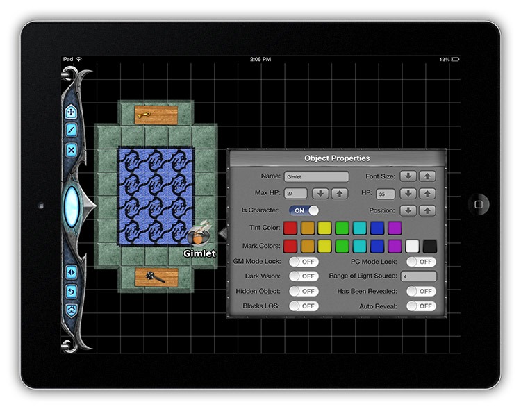
Erasing Backgrounds and Objects
To erase backgrounds, select the "delete" button in the toolbar and drag your finger over the background tiles you wish to delete.
To erase an object, select the "delete" button in the toolbar and tap the object. Objects are not deleted when you drag your finger, so that you can more easily replace the background underneath objects if you would like. If this is not what you want, you can turn on the "Drag to Paint Objects" option in the Settings tab, which will let you drag your finger to delete objects.
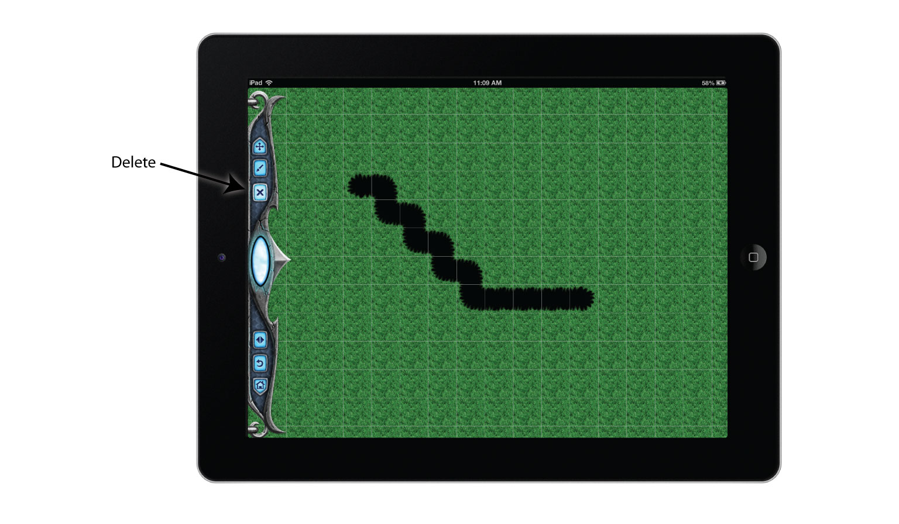Moving Within the Map
To move around the map, select the "move" button in the toolbar and drag your finger on the map. You can also pinch to zoom.
As a shortcut, you can also move the map while in delete or paint mode by using two fingers at once to pan or zoom.
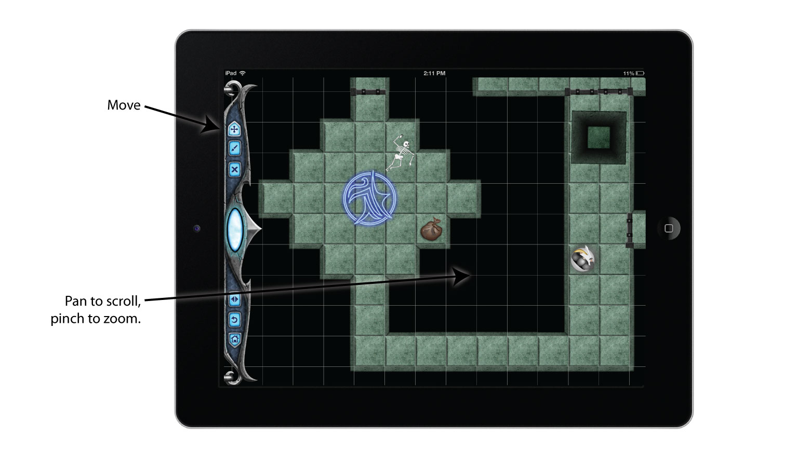Fullscreen Mode
To enter fullscreen mode, simply double tap the map somewhere where there are no objects. The status bar and toolbar will disappear, allowing you to enjoy your cool creation!
Changing the Background Image
You can put your own background image behind your map by going to the Settings tab in the Vault and choosing "Change bg image". This can be useful if you have your own background you'd like to use for the map. You can clear the image by choosing "Clear bg image" option. You can also move or scale the background image by selecting "Move/scale bg image" in the Settings tab.
Custom Objects
You can add your own custom objects to Battle Map by selecting the Objects tab in the Vault and selecting the "Custom" category. You will see a "+" in the upper right of the navigation bar. Tap that to select an image from your photo library.
To delete a custom object, hold down a finger on the custom objects until they begin to wiggle. Tap the "X" button in the upper left of any object you wish to delete.
Battle Map supports images with transparency - you just need to make sure that the image was saved with transparency preserved in your Saved Photos. One simple way to ensure this is to email the image to yourself, and check your email on your device. Hold your finger down on the image until a menu appears, and choose "Save to Camera Roll". The image will appear with a black background in your camera roll but will import correctly in Battle Map.
Note that tiles in Battle Map are 128x128 pixels. So when adding your own custom tokens, usually you'll want to make them slightly smaller than this (such as 100x100) so they easily fit within the bounds of a single tile.
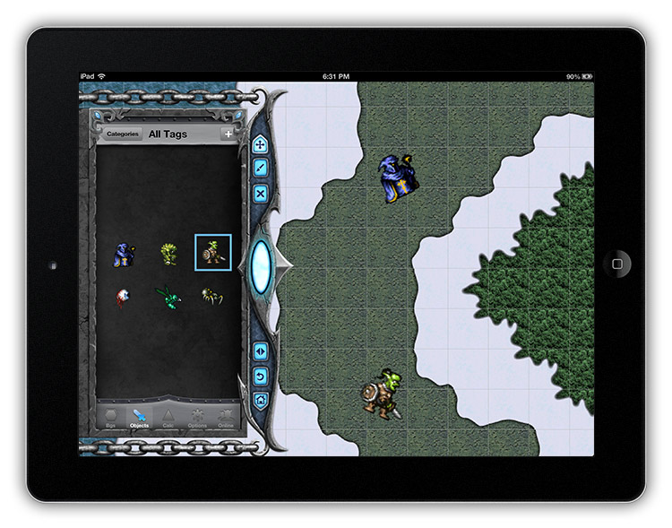Adventuring On Your Map
Moving Characters
To move an object or character in Player mode, you have two options:
- Drag the object or character like you would in Game Master mode.
- If the object is a character, select the character and then tap nearby the character to move in that direction.
The second option requires the "Tap to Move Char" option to be enabled in the Settings tab. For example, to move one square to the left tap slightly to the left of the character. When you are done, simply tap far away from the selected character.
When you are tapping to move, Battle Map will prevent your character from moving into a tile that blocks line of sight such as a wall. If you intend to move into a tile that is a wall, simply drag to move the character.
When moving a character, Battle Map will display the number of moves a character has made as a helpful reference (requires the "Display Times Moved" setting to be on). Note that this is not necessarily the number of tiles moved - for example, you may have moved a character by dragging, and moved several tiles in a single move.
You can also double tap an object in Player Mode to modify its properties.
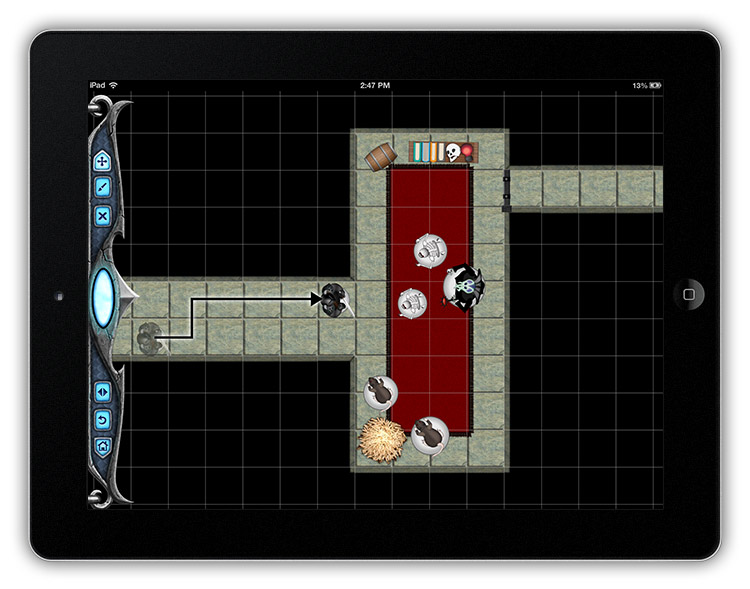Battle Map Visibility
Battle Map allows you to provide a suspenseful and exciting role playing experience to your players by revealing only what the players can currently see!
The following tiles block line of sight:
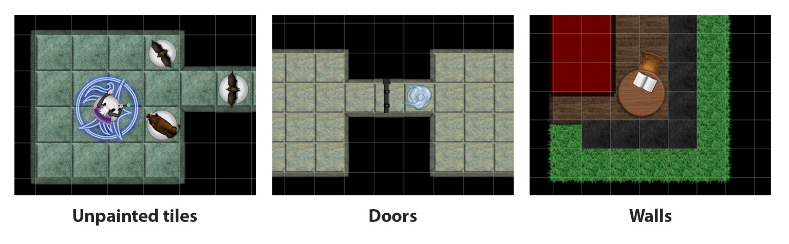- Unpainted tiles. If a tile has no background on it, it's considered to be a wall that blocks line of sight. This helps you create a dungeon easily just by drawing the rooms (surrounded by unpainted tiles), without having to manually draw walls.
- Wall tiles. You can use wall tiles (the last tile in the list of backgrounds) to draw arbitrary walls within rooms or separating areas. Some special tiles also block line of sight (like heavy trees).
- Door objects. See the Doors section for more details.
- Objects with the "blocks LOS" property. You can designate any object as blocking line of sight by setting the blocks LOS property in Object Properties. Note that the object will block line of sight in any tile that it overlaps into, so make sure that your object fits within the bounds of just the tiles you wish it to block.
By default, Battle Map sets maps as fully visible in player mode. If this is not what you want, you can change the following visibility-related settings:
- LOS Calc. On means characters can see a tile if they have line of sight (LOS) to a tile and the tile is illuminated. Off (default) means characters can see all tiles as long as they are illuminated.
- Map is Dark. On means tiles are dark unless there is a light source illuminating the tile. Off (default) means all tiles are illuminated!
- LOS is Circle. On (default) means line of sight is calculated using a circle centered on the object. Note for a small radius this will look similar to a square. Off means line of sight is calculated using a square centered on the object.
- Impersonate Char. On means when a character is selected, you can only see tiles visible to that character. When no character is selected, you can see tiles visible to any character. Off (default) means regardless of whether a character is selected or not, you can see tiles visible to any character.
- Show Explored. On (default) once a tile is revealed, even if the characters move to a position where it is no longer visible, the tile will still display (but shaded gray). This is to model the characters' memory of where they have been previously. However, objects that are in the shaded tiles will not be displayed until the tile is visible again! This is so the GM can be sneaky and move around monsters or other objects in the darkness, out of sight of the characters. Off means any area that is no longer visible will be black.
- Empty Tile = Wall. On (default) means an empty tile is considered a wall. Off means characters can see through empty tiles.
There are also a few Object Properties that affect visibility:
- Dark Vision. On means all tiles within line of sight of this character are considered illuminated, even if the map is dark. Off (default) means a character requires a tile to be illuminated to see it.
- Range of Light Source. All tiles within the specified radius are considered illuminated. By default, characters carry a light source of range 4, and certain objects such as candles are preset to be a light source.
Note that line of sight calculations always use square tiles, regardless of whether the map has a hex grid overlay.
The light source and visibility algorithms in Battle Map have been made generic so that it can be a good approximation useful for many different RPG systems. If Battle Map's algorithms and settings do not meet your exact needs, you can always disable the built-in system by setting Visibility to All, and perform your own calculations.
You can reset the explored tiles at any time by going to the Settings tab in the Vault and selecting "Reset Explored." This can be useful as a GM if you want to test out your map before exploring it with your players, or if you'd like to use the same map multiple times.
Hidden Objects
In Object Properties, you can set an object as a hidden object so it won't appear - and you probably want to set Auto Reveal to On as well. This means the object will not be revealed until a character enters one of the tiles that the object is in.
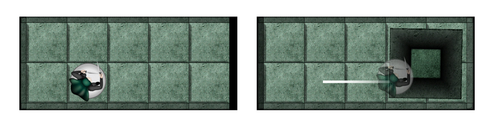This can be particularly useful for traps, or hidden treasure.
Once a hidden object is revealed, the "Has Been Revealed" object property will be set to "On". To re-hide the object, simply turn "Has Been Revealed" to "Off". Note that the object will continue to be revealed if a character is standing on one of its tiles!
When a character steps on a tile, if any part of the hidden object is within that tile it will be revealed. So take care that the hidden object is only within the tiles that you want it to be displayed on.
Doors
The objects that look like doors have special properties.
- They block line of sight in all tiles that they are a part of.
- You can double tap a door in PC mode to manually rotate the door 120°.
- If a character tries to walk through a door in Player Mode by tapping toward the door, the door will automatically open by rotating 120°. You can disable this behavior by setting "Auto Open Doors" to "Off" in the Settings tab.
- If any part of a door is in a particular tile, it is considered to block line of sight in that tile. So take care that the door does not extend further than you intend.
Connecting To An External Display
You have two options to connect Battle Map to an external display:
- Via airplay (requires iOS 6). If you have a display that supports AirPlay (such as an Apple TV, or a Mac with the app named "Reflection"), you can connect Battle Map wirelessly! Simply make sure your Airplay display is on and ready, then double tap your home button on the iPad so the list of apps appears. Scroll to the left until you find the Airplay button, tap it and select your display, and set Mirroring to On.

- Via a cable. Alternatively, you can connect your iPad to an external display with a cable. For this, you will need a cable to connect your iPad to your display. There are varying cables available from the Apple Store depending on the input your display takes. For example, if you have a monitor with VGA input, you'd need to buy the Apple iPad Dock Connector to VGA Adapter. Then you simply plug the connector into the bottom of your iPad or iPhone 4, and the VGA output into the connector. Battle Map will detect when a display is connected, and begin to display on the device.
After connecting an external display, you have to choose a map before Battle Map will display anything.
Also, note that only the Player Mode view displays on an external monitor or projector, so your players don't accidentally see unrevealed terrain! If you connect to the display and only get a black screen, make sure that a character has been placed on the map, and is visible on your device.
RPG Calc
Battle Map comes bundled with the RPG Calc iPhone/iPad app as a bonus, so you can roll dice quickly and easily as you play!
To load RPG Calc, select the Calc tab in the Vault:

With RPG Calc, you can type expressions like d10+4 or 2d4+3 and RPG Calc will roll the dice, add the modifiers, and present your results.
Some useful tips:
- Shortcut: double tap a dice for an instant roll.
- MR = result from last roll.
- dX allows you to roll an arbitrary sided die, such as d34 or d55.
Online Play
Introduction
With Battle Map 2, you can now play your maps online with your friends!
When you create an online game in Battle Map 2, the person who creates the game is the Game Master, and the players that join the game are the players. The Game Master chooses the map from his collection and can see and edit the entire map, while players only see what is visible in Player mode and move tokens.
Creates Game (GM)
Joins Game (Players)
Online play in Battle Map 2 is intended for existing gaming groups that already know each other - not matchmaking with random people over the Internet.
There are two main use cases for Battle Map 2 Online Play:
- Gaming group in a room. This will make gaming in-person with Battle Map even better, because the GM can design the map on his device, while still allowing players the ability to move their tokens themselves and have their own personal view. You don't even need an external display - although you can still use one if you want to make your online game even more epic!
- Gaming over Skype. Online play with Battle Map 2 is also great for groups who play over Skype. Everyone can have a view of the map in their hand, while the GM modifies the map in real time!
And the best part is online play in Battle Map 2 is completely free (subject to enough funds to keep the servers running!)
How To Play Online
To play online, the Game Master should take the following steps:
- Go to the main menu.
- Tap the online button in the lower left.
- Choose Create Game. The person who creates the game is the Game Master. Only the Game Master can access the Game Master panel, to draw backgrounds, add objects, etc.
- Enter a name for yourself, and a name for the room. You will need to share the name of the room to the players so they know what to connect to.
- Choose a map from your collection (or create a new map). When the other player connect, they will see this map. You can also switch the map at any time by going back to the main menu and selecting a different map.
Then the player should take the following steps:
- Go to the main menu.
- Tap the online button in the lower left.
- Choose Join Game.
- Enter a name for yourself, and the name of the room given to you by the GM.
- The map will load with you in Player Mode. You will be able to see the players view and move objects, but not add/draw objects.
In an online game, note that Visibility Options are controlled by the GM, but General Settings are controlled by each Player individually to their own preferences.
Troubleshooting
Q: Help! I lost my connection to the game, what now? A: If you lose your connection to the server, you can try to rejoin the game. If the GM rejoins the game, he will still be GM. In the event where your room is removed (which can happen when there are no players in a room), just have the GM recreate the game - the latest version of the map is still intact on the GM's device. If you try to rejoin and are told that your name is taken, just wait a minute for the servers to catch up and try again.
Battle Map Store
You asked for it, and we made it happen! :]
By popular request, Battle Map 2 includes a new store where you can buy optional add-ons such as premium tokens or backgrounds made by guest artists. You can access it via the button on the lower right of the Main Menu.
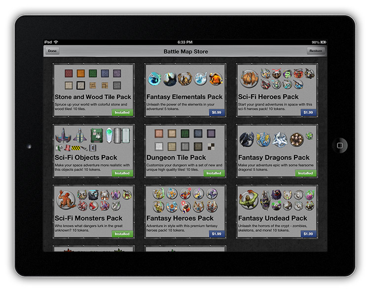To purchase an item from the store, simply tap the price in the lower right corner, and tap again to buy. Also, if you move to a new device and want to restore your purchases, simply tap the "Restore" button in the upper right corner.
Don’t worry, the presence of the store does not mean we will forsake the free token/background collection. We will continue to expand our free token/background set as we have time to make tokens. The store is composed of premium packs that we took care to have created (some by guest artists) with the highest quality, for game masters who would like more variety or non-fantasy setting types (space, modern, etc.).
We hope you enjoy the store, and we would love to hear from you if you have any requests for what you would like to see in the store in the future!
Settings Reference
You can customize much of the behavior in Battle Map by accessing the Settings tab in the Vault. Here is a quick reference for each of the settings:
General Settings
Settings that stay the same regardless of what map you have open.
- Object Scaling. On means when you have an object selected you can pinch to scale the object. Off means you cannot scale an object.
- Snap to Grid. On means while moving an object it snaps to the grid, and snaps rotation to 45 degree increments. Off means you can move/rotate an object to any position/rotation.
- Drag to Move Object. On means if you begin a drag on top of an object and continue dragging, you will drag the object. Off means you must select an object first before you can move it.
- Drag to Paint Objects. On means when painting objects you can drag to quickly paint many objects across multiple cells. Off means you paint a single object at a time and Battle Map automatically shifts to move mode after you paint so you can move your new object to the desired position.
- Tap to Move Char. On means when you have a character selected you can tap nearby the character to move it in that direction, or tap far away to unselect the character. Off means you must drag to move a character.
- Display Times Moved. On means Battle Map keeps track of the times your character has moved next to the token for reference.
- Show Trails. On means when you move a character, Battle Map will display trails of the movement that show you how the character moved (which will auto-fade over time). Off means no trails are displayed.
- Auto Open Doors. On means when your character tries to move into a door in "Tap to Move Char" mode, the door will automatically open. Off means you must manually double tap on a door to open it.
- Map Locked Map locked means you cannot pan or zoom the map. This is useful if you have the map at a particular spot and don't want to move it accidentally. Off means you can pan and zoom the map as usual.
- Impersonate Char. See the "Battle Map Visibility" section above.
- Sound Effects / Background Music Allows you to toggle the sound effects and background music on or off.
Map Settings
Settings that are particular to the map you are working with.
- Display Grid. On means Battle Map will draw lines separating the tiles. Off means Battle Map will not draw any lines.
- Hex Grid. On means Battle Map will draw a hex grid. Off means Battle Map will draw a square grid. Note that line of sight calculations always use a square grid.
- Other Map Settings. See the "Battle Map Visibility" section above.
Export Options
Options related to exporting the map (found in the Settings tab).
- Email Map. Allows you to email the map to yourself or a friend, along with a preview screenshot. The receiver will need Battle Map 2 to open the map.
- Email PDF. Allows you to email the map as a high quality PDF to yourself or a friend, along with a preview screenshot. This is handy if you want to print the map at full scale for your gaming table, or for play by email games.
- Export or Print PDF. Brings up a full screen preview of the PDF, and you can tap a button in the upper right corner to export the map in various ways, including sending it to a printer via AirPrint.
Thank You!
We'd like to end with a special thanks to you for purchasing Battle Map - your support is what makes this all possible!
This is just the beginning of what we'd like to do with Battle Map! If you'd like to see Battle Map continue to grow and improve, please rate the app and help spread the word. If sales support it, we will hire someone to continuously improve the app based on your feedback.
We hope you enjoy Battle Map 2, and that it helps you bring your adventures to the next level!
--Ray and Vicki from Razeware